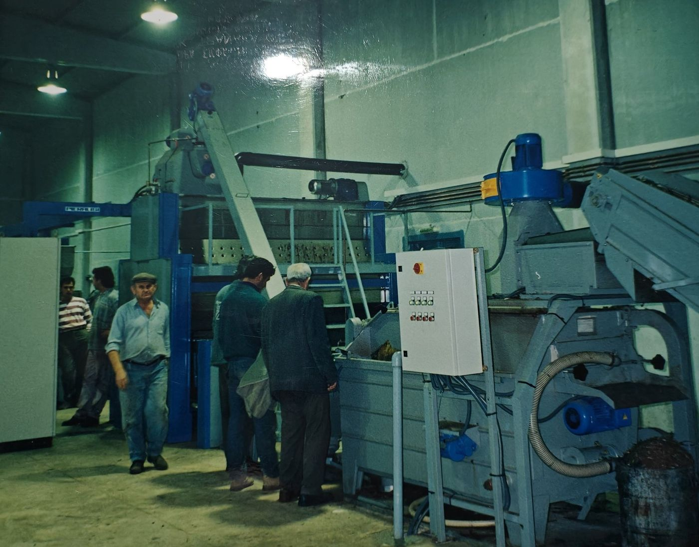

A family olive mill in Malesina, Greece, since 1963
We mill your olives separately, batch by batch, with cold extraction below 27°C. You take home the oil from your own trees, with its lab analysis.
2026–27 season
Open- Hours
- Every day, 07:00 – 20:00
- Season
- October – January
- Booking
- By phone on +30 22330 51298
- Where
- Malesina, Fthiotida, Greece
Directions on Google Maps

What we do for growers
We work for private growers from Malesina and the surrounding area, with every olive variety.
-
Milling batch by batch
Your olives are never mixed with anyone else’s. The oil you take home comes only from your own trees.
-
Lab analysis
Every batch comes with an analysis of your oil’s acidity and polyphenols.
-
Storage
If you don’t want to take it straight away, your oil can stay in closed stainless-steel tanks under nitrogen.
-
Harvesting
No time to pick? We can take care of the harvest and the milling of your olives.
From olive to oil
This is the path your olives take through our line. Each batch makes the journey on its own.
-
Receiving and weighing
We weigh your olives and keep them apart from every other batch.
-
Leaf removal and washing
Leaves, twigs and soil come out, so no off-flavours reach the oil.
-
Crushing
The clean olives are crushed into a paste.
-
Malaxing
< 27°CThe paste is mixed slowly at a controlled temperature, so it keeps its aromas.
-
Centrifuge
A stainless-steel decanter separates the oil from the water and the solids of the fruit.
-
Your oil
Take it home in your own containers or store it in our tanks, together with its lab analysis.
Cold extraction: under EU olive oil marketing rules, the term applies to oil obtained below 27°C by centrifuging the olive paste. That is exactly how our line works.

Since 1963, on the same land in Malesina.
Three generations at the same mill
In 1963 our grandfather planted the family’s first olive trees in Malesina and set up the mill. The work has passed from one generation to the next, and today the third generation runs it.
The equipment has changed since then. Today we work with a modern stainless-steel line, with the same family behind every batch.


Before you bring your olives
Book a slot
Call us on +30 22330 51298 to agree a day and time. At the height of the season it helps to call a few days ahead.
Bring fresh fruit
The less time olives spend waiting after picking, the better the oil. Use ventilated crates rather than closed sacks.
Plan where the oil goes
Bring your own containers, or tell us in advance if you would like us to keep your oil in our tanks.